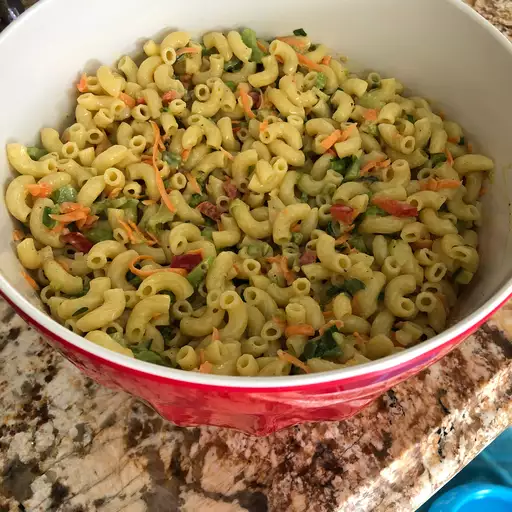

Chef John's Classic Macaroni Salad

This deli-style macaroni salad will always be a crowd-pleaser, whether it's sitting next to some smoky ribs or just a humble hot dog. Just pay attention to a few key details as you make it. Top with sliced green onions if desired.
Ingredients
Dressing
- 1 cup mayonnaise (optional)
- 1/4 cup white vinegar
- 2 tablespoons Dijon mustard
- 2 teaspoons kosher salt, or mmore to taste
- 1/2 teaspooon ground black pepper
- 1/8 teaspoon cayenne pepper
- 1 tablespoon white sugar, or more to taste
- 1 cup finely diced celery
- 3/4 cup diced red bell pepper
- 1/2 cup grated carrot
- 1/2 cup chopped green onions
- 1/4 cup diced jalapeno pepper
- 1/4 cup diced poblano pepper
Macaroni
- 1 (16 ounce) package uncooked elbow macaroni
- 1 tablespoon water (optional)
- 1 tablespoon mayonnaise (optional)
Directions
- Whisk mayonnaise, vinegar, Dijon, salt, black pepper, and cayenne together in a bowl until well blended. Whisk in sugar, then stir in celery, bell pepper, carrot, green onions, jalapeño pepper, and poblano pepper. Cover and refrigerate until macaroni is ready.
- Bring a large pot of generously salted water to a boil. Cook macaroni in the boiling water, stirring occasionally, until tender but firm to the bite, about 8 minutes. Drain but do not rinse.
- Let macaroni drain in a colander for about 5 minutes, shaking out the moisture from time to time. Pour macaroni into a large bowl; toss to separate and let cool to room temperature, 10 to 15 minutes. Macaroni should be sticky.
- Pour dressing over macaroni and stir until evenly distributed. Cover and refrigerate until macaroni absorbs the dressing, at least 4 hours or overnight if possible.
- Stir salad before serving. Mix water and remaining mayonnaise into salad for a fresher look.
Return to Home